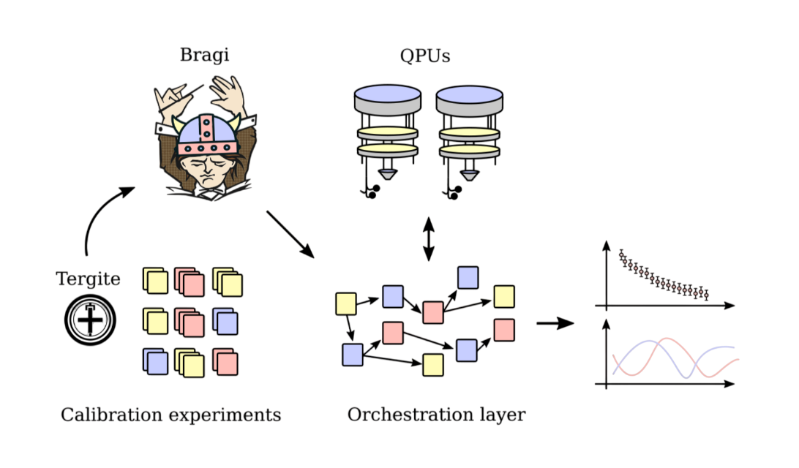

Research Interests
Control and Readout

We advance superconducting qubit performance through high-fidelity gate engineering and rapid, low-noise readout to bridge the gap toward fault-tolerant quantum computing.
In parallel, we develop fast and high-fidelity qubit readout schemes that enable rapid state discrimination while minimizing measurement-induced backaction. This includes the development of Purcell filters and travelling-wave Josephson parametric amplifiers (TWPAs).
By combining advances in pulse engineering, device design, and measurement techniques, our goal is to push the performance of superconducting qubit platforms toward the regime required for large-scale fault-tolerant quantum computation.
Fabrication

We advance scalable quantum computing by optimizing Al-based nanofabrication and 3D integration to enhance qubit coherence, device yield, and high-density processor layouts.
We investigate material interfaces and optimize thin-film deposition techniques to enhance qubit coherence, reproducibility, and device yield. We also develop post-fabrication electrical tuning methods to control qubit frequencies and mitigate frequency uncertainty arising from fabrication variability.
Looking toward larger processors, we explore scalable integration strategies, including multilayer circuit architectures, 3D integration, and miniaturization, enabling denser interconnects and more complex quantum processor layouts. By combining process development with device design and characterization, we aim to establish scalable fabrication techniques for large-scale superconducting quantum processors.
Software Stack & Control Orchestration

Quantum hardware is only as capable as the software that drives it. At the QC2 Lab, we are engineering a vertically integrated software suite designed to provide a high-reliability characterization ecosystem.
1. A Standardized Library of Calibration Nodes
The foundation of our control logic rests on a robust set of experimental primitives. Before deploying high-level algorithms, the system must possess a reliable understanding of the physical qubits. To this end, we have developed a comprehensive library of calibration and characterization nodes that cover fundamental protocols, from T₁/T₂ relaxation measurements to complex verification sequences. This library is specifically engineered for seamless integration with Qblox control hardware, ensuring deterministic execution and phase-stable pulse generation across our superconducting arrays.
2. Dynamic Real-Time Data Handling
Modern quantum computing demands a "living" hardware abstraction layer. We address this through a high-performance data architecture built upon a Redis in-memory database. This setup facilitates near-instantaneous read/write access to critical calibration parameters. By tracking pulse amplitudes, phases, and frequencies in real-time, our control systems can adapt dynamically to the device's state. This capability is vital for active feedback logic and environmental drift compensation.
3. Modular Orchestration & Research Playground
The final layer of our stack is Bragi, our custom orchestration engine. Through Bragi’s flexible API, we manage complex workflows, supporting Fabrication Pipelines (standardized, "gold-standard" workflows for device bring-up) and a Research Playground (a flexible "sandbox" where researchers can prototype novel physics experiments). This dual-layered approach fosters an environment where industrial-grade stability meets unrestricted academic curiosity.